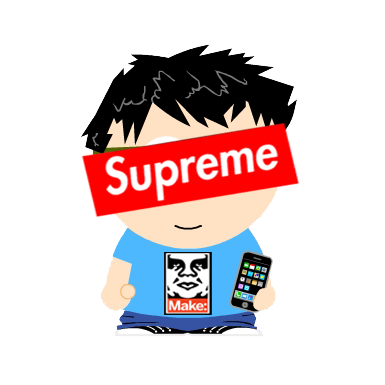

お前だれよ
- tableamdっていいます
- Pythonとか書きます(Pythonしか書けないです)
- IoTとか興味あります
- FE，AP，アマ無3級，英検準1級
最近やっ(てる|た)こと
大学の学食と連携したポータルサイトの運営- WebSocketを用いたオンラインマルバツゲームの作成
- Felicaポートを利用した委員会室の出席チェッカー作成
- Android端末で操作する転がる空き缶ラジコン作成
- 大学のトイレの利用状況APIの作成(大学内アイディアコンテスト優秀賞受賞)
- WiFiモジュールESP8266でIoTもどき
- 画像処理を用いたサイコロの検定機の作成(授業内課題)
- 学祭展示物投票システムネットワーク部分担当
- LINEのBOT作成
- ニキシー管時計(NTPによる時間補正機能、クロスフェード、シャッフル機能付き)
- 大学内の混雑状況取得(大学内アイディアコンテスト優秀賞受賞)
- 冷蔵庫内の麦茶ポット監視システム作成
- 音声処理を用いたインターホン監視システム作成
- OpenCVのみでL.A.S.E.R.Tagクローン作成
なう